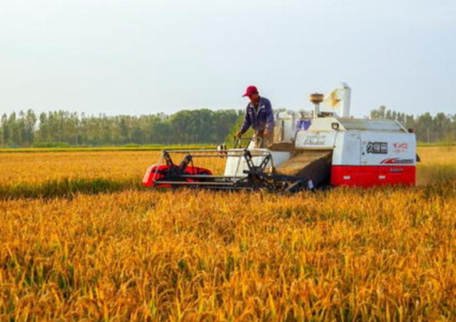

袁隆平，无人不知无人不晓，中国杂交水稻育种专家，中国研究与发展杂交水稻的开创者，被誉为“世界杂交水稻之父” 特别是在今年的疫情期间，90岁的袁隆平院士与84岁的钟南山院士更是被喻为我们的“医食父母”。
对于沙漠种水稻这件事，估计很多人想都不敢想，因为气候和人为的原因，沙漠化的问题比以前严重很多，土壤沙漠化导致耕地慢慢减少。
沙漠化的出现会产生很多问题，现在很多城市面临沙尘暴的问题，漫天飞舞的黄沙，这对会对城市产生非常不好的影响，这些其实就是沙漠化导致的，而且土地沙漠化一旦产生非常难治理。
这些年我国一直在研究沙漠化的治理方法，这些年我国在沙漠化的治理方面投入了很多人力物力财力，就是希望尽快把我国现在沙漠化严重的问题解决。
治理沙漠化已经很难了，那么在沙漠种水稻的难易程度，就更加不用说了，但是有一个叫滕飞的年轻人，他凭借着自己的努力，经过多年的研究，成功在沙漠种植水稻。
最初没有人相信滕飞能在科尔沁沙漠成功种植水稻，因为这片沙漠连沙漠植物都很难生存，水稻就不用说了。
但是滕飞做到了，这片沙漠原来是草原，因为植被退化变成沙漠，然后滕飞通过技术利用了沙漠下面的地下水，然后他成功了。
因为沙漠污染源少，空气好，光照非常充足，这片沙漠产出的大米质量非常好，口感很棒。
滕飞的这一举动在世界产生很轰动影响，外国人称滕飞在沙漠成功种植水稻的事迹是逆天行为。

袁隆平老先生的事迹大家应该都知道，因为他研发的杂交水稻解决了我们国家很多人的吃饭问题，人们知道了滕飞的事迹后，把他称为“第二个袁隆平”。
滕飞的这一研究成果，不管是对我国的沙漠化治理或者是粮食产业的发展都产生非常有利的影响。
有时候要敢想，敢去尝试，很多事情会出乎意料，就是沙漠种水稻这个事情一样，很多人根本不敢想，但是有滕飞靠着自己的努力就是做到了。